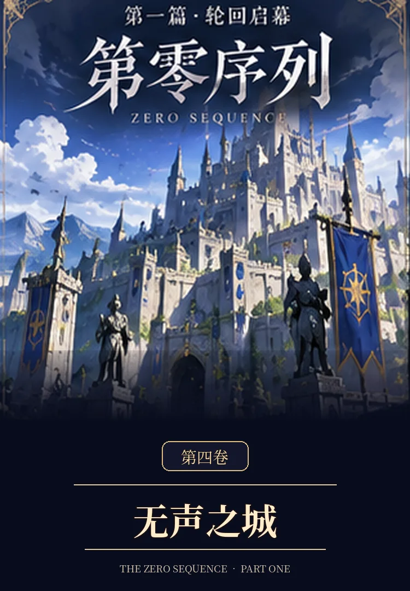

VOLUME 04 · COMPLETE
第四卷《无声之城》

从维兰德城无声的钟，到北线第三路碑的失踪者。长渊工作室、白塔、冒险公会与本地工匠一道寻找不断偏离的道路；银月第一次在没有指令的情况下选择救人。这座城不是谜题，而是无数人的家。
VOLUME 04 · COMPLETE

从维兰德城无声的钟，到北线第三路碑的失踪者。长渊工作室、白塔、冒险公会与本地工匠一道寻找不断偏离的道路；银月第一次在没有指令的情况下选择救人。这座城不是谜题，而是无数人的家。